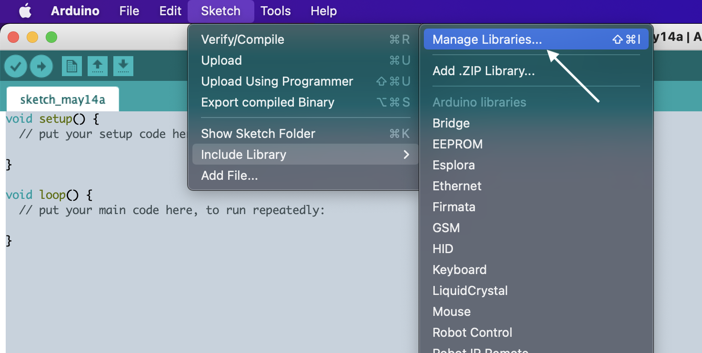

Installation¶
There are two ways to install the library depending on your project. If you’re using Arduino IDE to compile your project you only need to install the library into the IDE.
The second method is meant for more advanced users that use makeEspArduino for building the project for ESP32/ESP8266 devices.
Arduino IDE¶
To install the library into your Arduino IDE you can use Library Manager (available from IDE version 1.6.2). Open the IDE and click to the “Sketch” menu and then Include Library > Manage Libraries.
Type “home-assistant-integration” in the search field, select the latest version of the library from the dropdown and then click Install.

For other installation methods please refer to Arduino documentation.
makeEspArduino¶
The library can be installed in an environment managed by makeEspArduino. The best approach is to add the library as a submodule in the project as follows:
git submodule add https://github.com/dawidchyrzynski/arduino-home-assistant.git arduino-home-assistant
cd arduino-home-assistant && git checkout tags/2.0.0
Then you just need to add one extra line in your Makefile:
LIBS := $(ROOT)/arduino-home-assistant